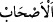
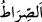

O azgın kâfirlere “de ki: “Herkes” Bizden ve sizden her biri, bizim ve sizin işinin
sonunun ne olacağını “beklemektedir.”
Kâşifî der ki:
Yâni siz bizim cezâmızı ve gazabımızı gözler, ümit edersiniz;
Biz de sizin cezâlandırılmanızı ve azâbınızı demektir.
Tefsîr-i Kebîr’de şöyle der: “Bizden ve sizden her biri kendi işinin nasıl
neticeleneceğini beklemektedir: Bu, ya cihâd ederek devletin ve kuvvetin ortaya
çıkmasıyla ölümden önce olacak ya da sevab-cezâ ve hak üzere olana Allâh’ın çeşitli
ikramları ile bâtıl üzere olana çeşitli azâbı ile olacaktır.
Müşriklerin şöyle dedikleri rivâyet edilmiştir: “Biz, Muhammed’in başına bir belânın
gelmesini bekliyoruz. O öldüğü vakit kendisinden kurtulacağız.” İşte bunun üzerine
Allah Teâlâ şöyle buyurdu: “Öyle ise siz de bekleyin.” Allâh’ın emri geldiğinde
“Yakında anlayacaksınız; doğru düzgün yolun yolcuları kimmiş ve” dalâletten
kurtulup “hidayette olan kimmiş!” Yâni biz miyiz, yoksa siz mi?
“ sâhib’in çoğuludur ve ayrılmayan, beraber olan anlamındadır. “ ise
kendisinde hiç sapma olmayan, dosdoğru yol anlamındadır.
Şâir şöyle der:
Toz duman dağılınca görürsün,
Altındaki at mı yoksa eşek mi?
Burada, inkârcılara şiddetli bir tehdid vardır.
Kâşifî der ki: “Hidâyette olan”dan maksad, Hz. Peygamber (s.a.)’dir. Çünkü O hem
yolu bulan/hidâyette olan, hem de yol gösterendir.”
Yolu bilen, yolu gören ve yola ileten
Hakîkatte Hayrü’l-beşer’den başkası değildir
Âyette menzilleri aşarak ve mâsivâdan alâkayı keserek Allâh’a vasıl olarak hidâyete
erenler ile Allah’tan gayrısına bağlanıp O’ndan ayrı düşenlere işâret vardır. Nitekim
Hucendî şöyle der:
Alâkayı kesmeden vuslat müyesser olmaz
Birinci kesilme cümle mâsivâdan kesilmektir.
Bilesin ki Allah, mühlet tanıyarak ve kullarını irşâd ile bütün mâzeretlerin önünü
kesmiştir. “Üstün delil Allâh’ındır.” (el-En‘âm, 6/149)
Ebû Saîd Hudrî (r.a.)’dan Rasûlullah (s.a.)’in şöyle buyurduğu rivâyet edilmiştir:
“(Kıyamet gününde) şu üç kişinin Allâh’a arz edecek delili olur: Fetret zamanında
(peygamber olmayan zamanda) ölen kimse. Bu, Allâh’a: “Bana peygamber gelmedi”